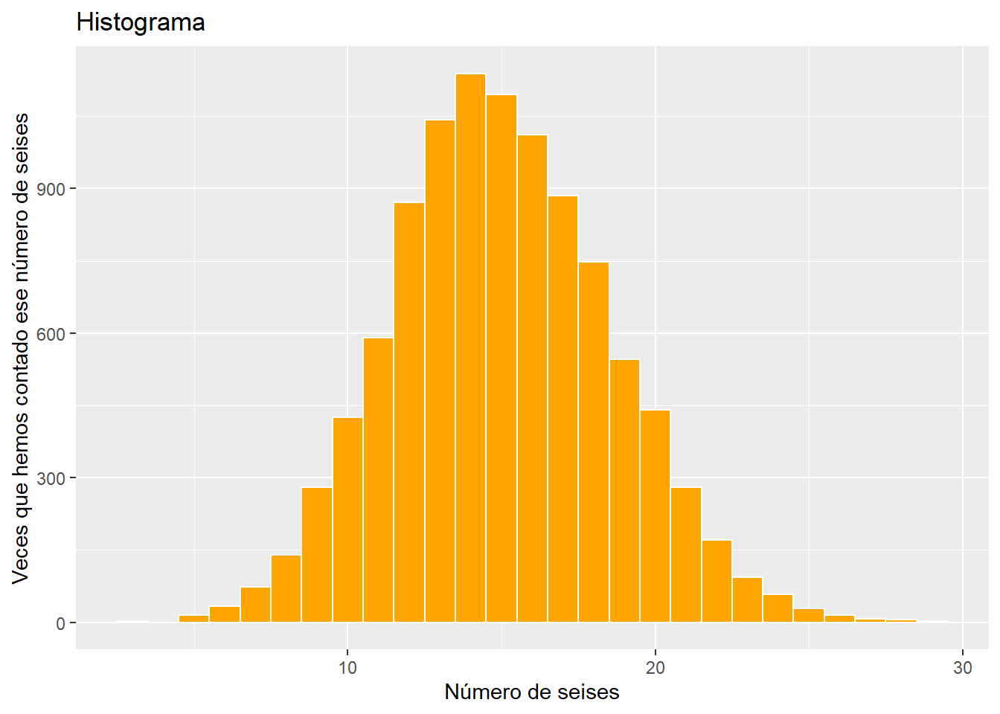
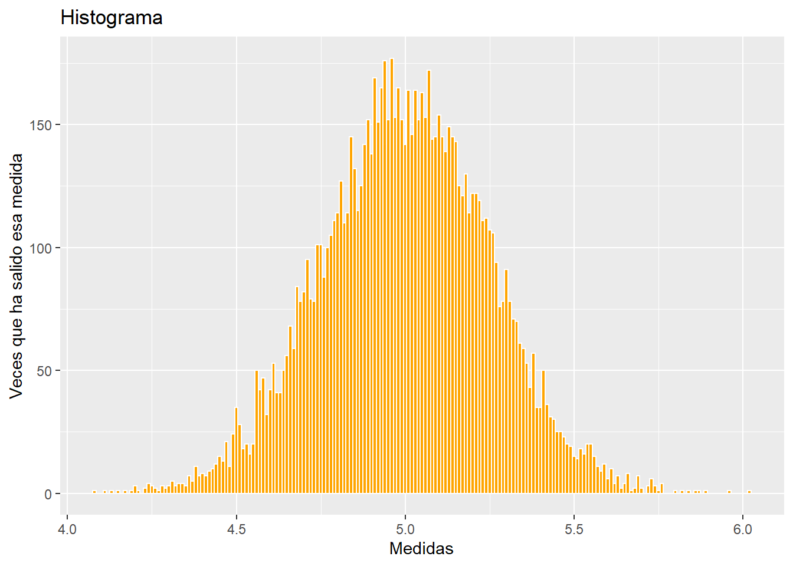
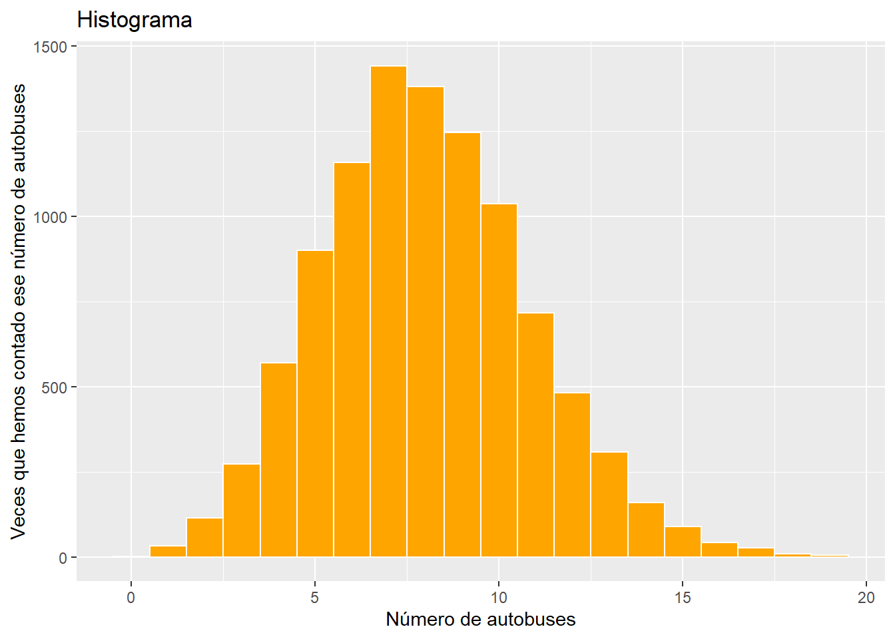

library(ggplot2)
library(dplyr)
tamano_muestral = 10000 #tamaño muestral (diez mil)Todo experimento consiste en realizar una actividad y, en el curso de ella, medir algo. Si repetimos el experimento muchas veces (o si lo realizamos sobre muchos individuos) vamos obteniendo una muestra de resultados. A este número de veces que se repite el experimento se le llama tamaño muestral.
En este caso:
La función “rbinom” realiza todo esto por nosotros. Sus parámetros son:
my_n = tamano_muestral
my_size = 90
my_prob = 1/6
muestra <- rbinom(n=my_n, size=my_size, prob=my_prob)No podemos mostrar los resultados de los 10000 experimentos pero sí de los primeros:
head(muestra, 30)## [1] 21 16 17 16 22 20 12 20 9 20 18 18 13 10 13 13 17 17 8 17 23 14 17 14 16
## [26] 15 19 11 14 21Podemos recoger en una tabla cuantas veces ha salido cada resultado:
df <- data.frame(nro_seises = muestra) %>%
group_by(nro_seises) %>%
summarise(veces = n()) %>%
arrange(-veces)
df## # A tibble: 26 x 2
## nro_seises veces
## <int> <int>
## 1 14 1139
## 2 15 1095
## 3 13 1043
## 4 16 1012
## 5 17 885
## 6 12 871
## 7 18 748
## 8 11 591
## 9 19 546
## 10 20 441
## # ... with 16 more rowsEl histograma muestra, básicamente, esa tabla en forma gráfica:
ggplot() +
geom_histogram(aes(x = muestra),
color = "white",
fill = "orange",
binwidth = 1) +
labs(title = "Histograma",
x = "Número de seises",
y = "Veces que hemos contado ese número de seises")
Vemos que el resultado más repetido es 14, que ha ocurrido 1139 veces. Como el máximo de veces que podía repetirse era 10000, esto supone una proporción de 0.1139 o un porcentaje del 11.39%. A esta proporción se le llama frecuencia del resultado 14.
Podemos recoger en una tabla las frecuencias de todos los resultados. A esta tabla se la llama la distribución de resultados del experimento.
distri_bin <- mutate(df, frecuencia = round(veces / my_n,4))
distri_bin <- select(distri_bin, nro_seises, frecuencia)
distri_bin## # A tibble: 26 x 2
## nro_seises frecuencia
## <int> <dbl>
## 1 14 0.114
## 2 15 0.110
## 3 13 0.104
## 4 16 0.101
## 5 17 0.0885
## 6 12 0.0871
## 7 18 0.0748
## 8 11 0.0591
## 9 19 0.0546
## 10 20 0.0441
## # ... with 16 more rowsCualquier experimento que se haga para medir algo producirá, en última instancia, una tabla de distribución de resultados. Más concisamente, se puede decir que todo experimento se resume en una distribución.
Si la distribución de un experimento coincide con la que acabamos de obtener (mismos resultados y misma frecuencia para cada resultado, salvo quizás el último decimal en algunos casos) diremos que el experimento indica que lo que se está midiendo sigue una distribución binomial de tamaño 90 y probabilidad 1/6.
Por ejemplo, si medimos la edad de las personas ingresadas en un hospital podría ser que saliera la tabla anterior (los niños de 14 años serían, en particular, los más habituales). Diríamos que la edad de las personas internadas en ese hospital sigue una distribución binomial de tamaño 90 y probabilidad 1/6.
Obviamente, podemos decir que el número de “6s”" que salen al tirar 90 veces un dado sigue una distribución binomial de tamaño 90 y probabilidad 1/6.
Otros ejemplos serían:
Todo experimento consiste en realizar una actividad y, en el curso de ella, medir algo. Si repetimos el experimento muchas veces (o si lo realizamos sobre muchos individuos) vamos obteniendo una muestra de resultados. A este número de veces que se repite el experimento se le llama tamaño muestral.
En este caso:
La función “rnorm” realiza el experimento por nosotros. Sus parámetros son:
my_n = tamano_muestral
my_mean = 5
my_sd = 0.25
muestra <- round( rnorm(n=my_n, mean=my_mean, sd=my_sd) ,2)No podemos mostrar los resultados de los 10000 experimentos pero sí de los primeros:
head(muestra, 30)## [1] 5.19 4.94 4.66 4.69 4.97 5.47 4.87 4.76 4.85 5.14 4.90 4.69 4.97 4.99 5.39
## [16] 5.16 5.02 4.90 5.20 5.29 4.90 5.03 5.44 5.26 5.35 5.27 5.35 4.85 4.58 5.07Podemos recoger en una tabla cuantas veces ha salido cada resultado:
df <- data.frame(medidas = muestra) %>%
group_by(medidas) %>%
summarise(veces = n()) %>%
arrange(-veces)
df## # A tibble: 169 x 2
## medidas veces
## <dbl> <int>
## 1 4.96 177
## 2 4.94 176
## 3 5.07 172
## 4 4.91 169
## 5 4.93 165
## 6 4.98 165
## 7 5.01 164
## 8 5.03 164
## 9 5.05 163
## 10 5.1 154
## # ... with 159 more rowsEl histograma muestra, básicamente, esa tabla en forma gráfica:
ggplot() +
geom_histogram(aes(x = muestra),
color = "white",
fill = "orange",
binwidth = 0.01) +
labs(title = "Histograma",
x = "Medidas",
y = "Veces que ha salido esa medida")
Vemos que el resultado más repetido es 4.96, que ha ocurrido 177 veces. Como el máximo de veces que podía repetirse era 10000, esto supone una proporción de 0.0177 o un porcentaje del 1.77%. A esta proporción se le llama frecuencia del resultado 4.96.
Podemos recoger en una tabla las frecuencias de todos los resultados. A esta tabla se la llama la distribución de resultados del experimento.
distri_nor <- mutate(df, frecuencia = round(veces / my_n,4))
distri_nor <- select(distri_nor, medidas, frecuencia)
distri_nor## # A tibble: 169 x 2
## medidas frecuencia
## <dbl> <dbl>
## 1 4.96 0.0177
## 2 4.94 0.0176
## 3 5.07 0.0172
## 4 4.91 0.0169
## 5 4.93 0.0165
## 6 4.98 0.0165
## 7 5.01 0.0164
## 8 5.03 0.0164
## 9 5.05 0.0163
## 10 5.1 0.0154
## # ... with 159 more rowsCualquier experimento que se haga para medir algo producirá, en última instancia, una tabla de distribución de resultados. Más concisamente, se puede decir que todo experimento se resume en una distribución.
Si la distribución de un experimento coincide con la que acabamos de obtener (mismos resultados y misma frecuencia para cada resultado, salvo quizás el último decimal en algunos casos) diremos que el experimento indica que lo que se está midiendo sigue una distribución normal de media 5 y desviación típica 0.25.
Por ejemplo, si medimos los pesos de niños de 3 meses de edad que han pasado por una clínica pediátrica, podría ser que saliera la tabla anterior (en particular, el peso más repetido sería 4.96 kg). En ese caso diríamos que los pesos de los niños de 3 meses de edad que han pasado por esa clínica pediátrica siguen una distribución normal de media 5 kg y desviación típica 0.25 kg.
Obviamente, podemos decir que las medidas de un barra de 5 metros con una aparato cuya precisión es de 0.25 metros siguen una distribución normal de media 5 metros y desviación típica 0.25 metros.
Otros ejemplos serían:
Todo experimento consiste en realizar una actividad y, en el curso de ella, medir algo. Si repetimos el experimento muchas veces (o si lo realizamos sobre muchos individuos) vamos obteniendo una muestra de resultados. A este número de veces que se repite el experimento se le llama tamaño muestral.
En este caso:
La función “rpois” realiza el experimento por nosotros. Sus parámetros son:
my_ = tamano_muestral
my_lambda = 4 * 2
muestra <- rpois(n=my_n, lambda=my_lambda)No podemos mostrar los resultados de los 10000 experimentos pero sí de los primeros:
head(muestra, 30)## [1] 13 9 8 7 6 7 9 10 9 7 1 8 12 7 8 5 12 3 6 5 9 7 9 4 14
## [26] 7 9 12 3 14Podemos recoger en una tabla cuantas veces ha salido cada resultado:
df <- data.frame(nro_autobuses = muestra) %>%
group_by(nro_autobuses) %>%
summarise(veces = n()) %>%
arrange(-veces)
df## # A tibble: 20 x 2
## nro_autobuses veces
## <int> <int>
## 1 7 1443
## 2 8 1382
## 3 9 1247
## 4 6 1159
## 5 10 1037
## 6 5 901
## 7 11 716
## 8 4 571
## 9 12 483
## 10 13 308
## 11 3 272
## 12 14 160
## 13 2 115
## 14 15 90
## 15 16 43
## 16 1 32
## 17 17 27
## 18 18 8
## 19 19 4
## 20 0 2El histograma muestra, básicamente, esa tabla en forma gráfica:
ggplot() +
geom_histogram(aes(x = muestra),
color = "white",
fill = "orange",
binwidth = 1) +
labs(title = "Histograma",
x = "Número de autobuses",
y = "Veces que hemos contado ese número de autobuses")
Vemos que el resultado más repetido es 7, que ha ocurrido 1443 veces. Como el máximo de veces que podía repetirse era 10000, esto supone una proporción de 0.1443 o un porcentaje del 14.43%. A esta proporción se le llama frecuencia del resultado 7.
Podemos recoger en una tabla las frecuencias de todos los resultados. A esta tabla se la llama la distribución de resultados del experimento.
distri_poi <- mutate(df, frecuencia = round(veces / my_n,4))
distri_poi <- select(distri_poi, nro_autobuses, frecuencia)
distri_poi## # A tibble: 20 x 2
## nro_autobuses frecuencia
## <int> <dbl>
## 1 7 0.144
## 2 8 0.138
## 3 9 0.125
## 4 6 0.116
## 5 10 0.104
## 6 5 0.0901
## 7 11 0.0716
## 8 4 0.0571
## 9 12 0.0483
## 10 13 0.0308
## 11 3 0.0272
## 12 14 0.016
## 13 2 0.0115
## 14 15 0.009
## 15 16 0.0043
## 16 1 0.0032
## 17 17 0.0027
## 18 18 0.0008
## 19 19 0.0004
## 20 0 0.0002Cualquier experimento que se haga para medir algo producirá, en última instancia, una tabla de distribución de resultados. Más concisamente, se puede decir que todo experimento se resume en una distribución.
Si la distribución de un experimento coincide con la que acabamos de obtener (mismos resultados y misma frecuencia para cada resultado, salvo quizás el último decimal en algunos casos) diremos que el experimento indica que lo que se está midiendo sigue una distribución de Poisson de parámetro \(\lambda\) = 4*2 = 8.
Por ejemplo, si medimos la edad de las personas ingresadas en un hospital podría ser que saliera la tabla anterior (los niños de 7 años serían, en particular, los más habituales). Diríamos que la edad de las personas internadas en ese hospital sigue una distribución de Poisson de parámetro \(\lambda\) = 4*2 = 8.
Obviamente, podemos decir que el recuento durante 2 horas de los autobuses que llegan a una parada cuya frecuencia acordada es de 4 autobuses por hora sigue una distribución de Poisson de parámetro \(\lambda\) = 4*2 = 8.
Otros ejemplos serían:
Lo que se puede ver en los experimentos anteriores es lo que dice la Ley de los grandes números:
En efecto, rehaciendo este documento una y otra vez se ve como las distribuciones son prácticamente las mismas, salvo quizás el último decimal en algunos casos. Y si aumentaramos el tamaño muestral coincidirían aun más.